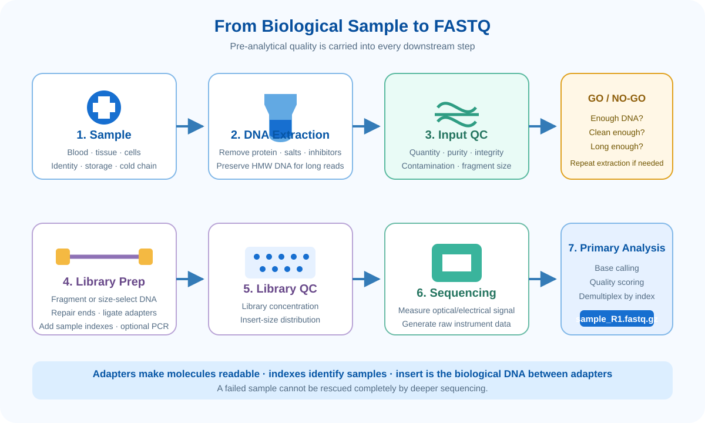
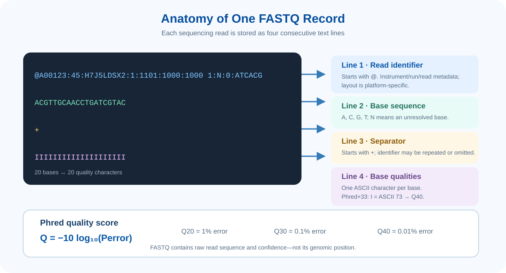
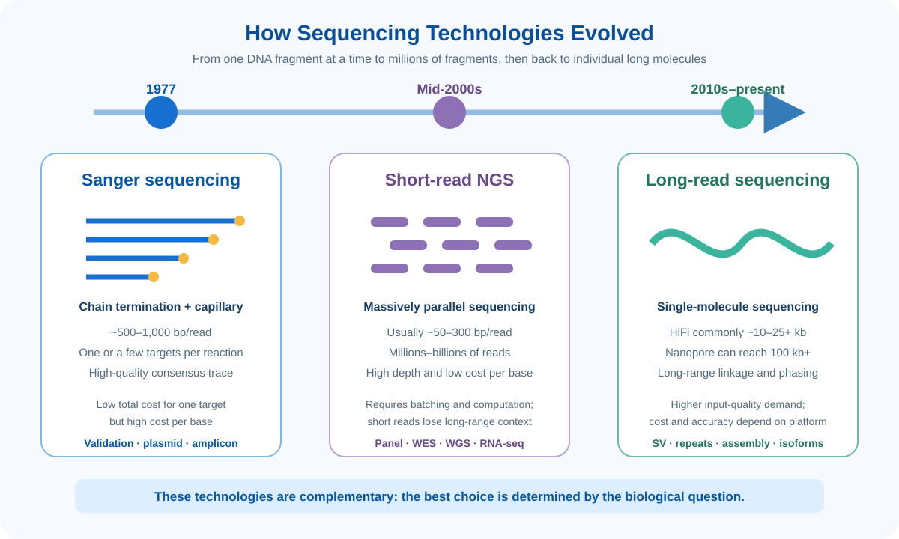
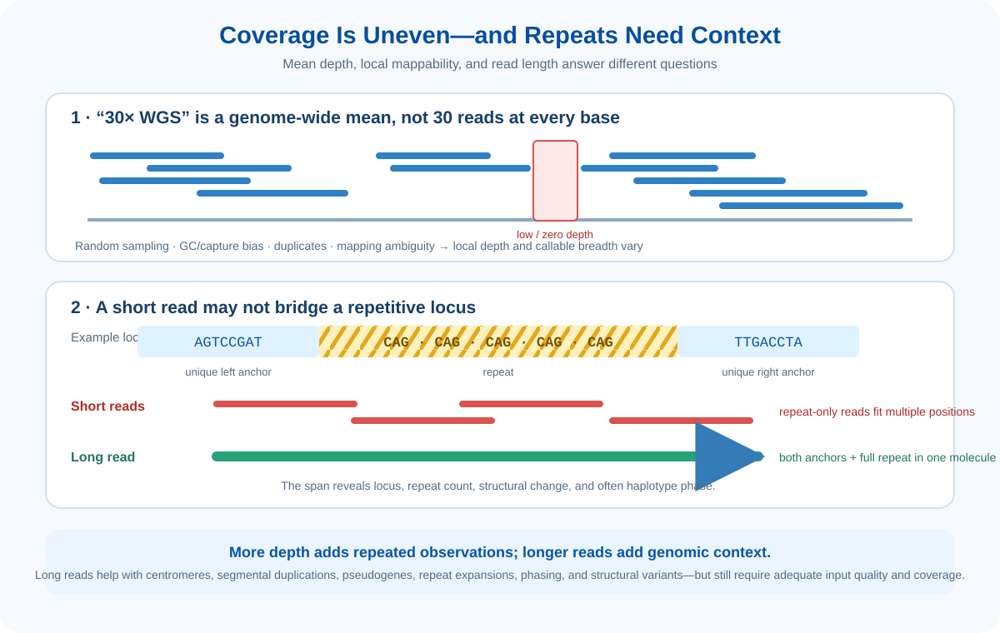
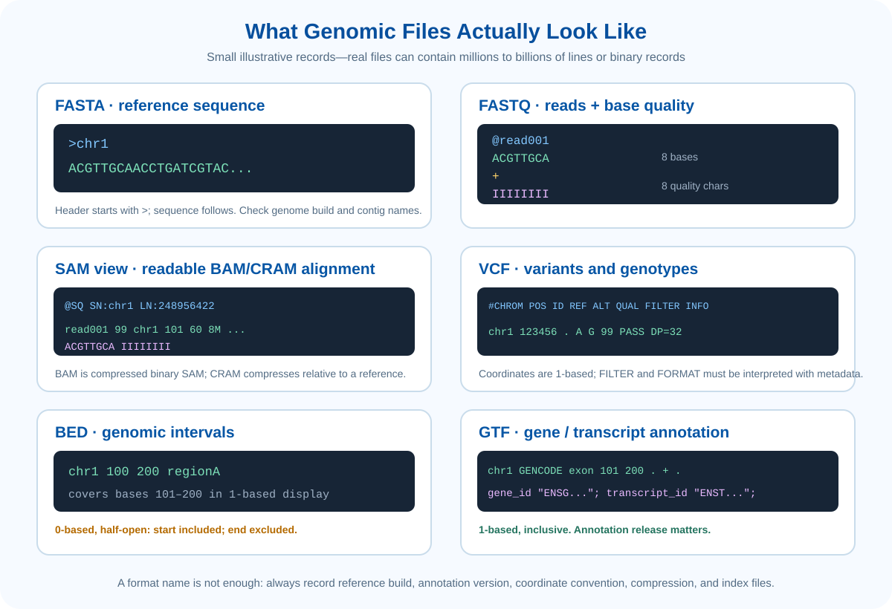
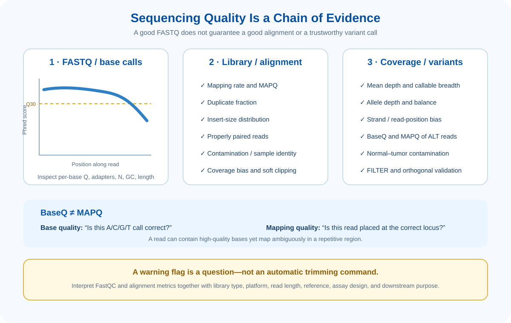

Learning Objectives
- 생물학적 시료가 library와 FASTQ로 변환되는 과정을 설명할 수 있다.
- FASTQ 한 record의 네 줄과 Phred quality score를 해석할 수 있다.
- Sanger, short-read NGS, long-read sequencing의 원리·read length·비용 구조를 비교할 수 있다.
- 연구 질문에 따라 WGS, WES, targeted panel과 적절한 sequencing 기술을 선택할 수 있다.
- Mean depth, local depth, coverage breadth의 차이와 반복서열에서 short read의 한계를 설명할 수 있다.
- FASTA, FASTQ, BAM/CRAM, VCF, BED, GTF의 역할과 좌표 체계를 구분할 수 있다.
1. From Sample to FASTQ
Sequencing은 장비에 DNA를 넣는 한 단계가 아닙니다. 시료 채취와 보관, 핵산 추출, 투입물 품질평가, library 제작, sequencing, base calling과 sample demultiplexing이 연속된 과정입니다. 앞 단계에서 발생한 오류는 뒤 단계의 소프트웨어만으로 완전히 복구하기 어렵습니다.

1.1 Sample collection, extraction and input QC
| 확인 항목 | 왜 중요한가? | 대표 확인 방법 |
|---|---|---|
| 시료 정체성과 보관 | Sample swap, 분해, fixation 영향은 분석 전체를 바꿉니다. | Barcode·LIMS, 보관시간/온도, FFPE 여부, chain of custody |
| DNA 양 | 투입량 부족은 library complexity 저하와 PCR duplicate 증가로 이어질 수 있습니다. | Fluorometric quantification; 흡광도만으로 양을 판단하지 않기 |
| 순도 | 염, 단백질, 유기용매 등은 효소반응을 방해할 수 있습니다. | A260/280·A260/230을 참고하되, 비율 하나만으로 sequencing 적합성을 확정하지 않기 |
| 무결성·길이 | 이미 잘게 분해된 DNA는 긴 insert 또는 long read를 만들 수 없습니다. | Gel/capillary electrophoresis, DIN, long-read용 high-molecular-weight DNA 확인 |
| 오염 | 다른 사람·미생물 DNA는 유효 depth를 낮추고 잘못된 변이를 만들 수 있습니다. | Negative control, sex/SNP fingerprint, contamination 추정 |
1.2 Library preparation은 무엇을 하는가?
Library는 sequencing 장비가 인식하고 복제하거나 통과시킬 수 있도록 adapter가 연결된 DNA fragment의 집합입니다. Short-read library는 보통 아래 단계를 포함하지만, tagmentation·PCR-free·capture·amplicon 방식에 따라 일부 단계는 합쳐지거나 생략됩니다.
- Insert: 실제로 알고 싶은 sample 유래 DNA 구간입니다.
- Adapter: Flow cell 결합, sequencing primer 결합, 증폭 등에 필요한 인공서열입니다.
- Index/barcode: 여러 sample을 한 run에서 섞어 읽은 뒤 다시 분리(demultiplexing)하기 위한 sample 표지입니다.
- PCR: 낮은 투입량을 보완하지만 중복과 GC bias를 만들 수 있어, 필요성과 cycle 수를 함께 고려합니다.
1.3 Sequencing에서 FASTQ까지
장비는 물리·화학적 신호를 측정하고 base calling으로 A/C/G/T와 각 염기의 신뢰도를 결정합니다. 여러 sample을 함께 읽었다면 index를 이용해 분리한 뒤, 일반적으로 .fastq.gz 파일을 생성합니다. Paired-end 실험에서는 동일 fragment의 양쪽 끝이 R1과 R2 파일로 저장됩니다.

@A00123:45:H7J5LDSX2:1:1101:1000:1000 1:N:0:ATCACG
ACGTTGCAACCTGATCGTAC
+
IIIIIIIIIIIIIIIIIIII| 줄 | 예시 | 의미 |
|---|---|---|
| 1 | @A00123... | @로 시작하는 read identifier입니다. 장비·run·flow cell·좌표·read 방향·index 등 세부 형식은 플랫폼에 따라 다릅니다. |
| 2 | ACGTTGCA... | 판독된 염기서열입니다. N은 장비가 특정 염기를 확정하지 못했음을 뜻합니다. |
| 3 | + | Sequence와 quality를 구분합니다. Identifier가 반복될 수도 있지만 생략되는 경우가 많습니다. |
| 4 | IIIIIIII... | 각 염기의 Phred quality를 ASCII 문자로 인코딩합니다. 예시의 Phred+33에서 I는 Q40입니다. |
2. Sequencing Technologies & Strategies
Sequencing 기술은 “한 번에 하나의 비교적 긴 fragment를 정밀하게 확인”하는 Sanger 방식에서, “수백만 개의 짧은 fragment를 병렬로 읽는” NGS로 발전했습니다. 이후 single-molecule long-read 기술은 read 길이를 늘려 short read만으로 풀기 어려운 반복서열, 구조변이와 haplotype 문제를 직접 연결하기 시작했습니다. 새 기술은 이전 기술을 완전히 대체하기보다 서로 다른 질문을 해결합니다.

2.1 세 기술은 신호를 어떻게 읽는가?
2.2 Read length, depth and cost 비교
| 항목 | Sanger | Short-read NGS | Long-read sequencing |
|---|---|---|---|
| 대표 read 길이 | 약 500–1,000 bp | 주로 50–300 bp; paired-end 가능 | PacBio HiFi 약 15–25 kb; nanopore는 조건에 따라 100 kb 이상 가능 |
| Throughput | 반응당 한 개 또는 소수 fragment | 매우 높음: 대규모 병렬 처리 | 긴 single-molecule read를 대량 생성 |
| Depth의 의미 | Chromatogram 확인에 가깝고 genome 평균 depth로 표현하지 않음 | Human germline WGS는 흔히 30–50×, WES는 약 100× 계획 | Human WGS 연구는 목적에 따라 약 15–30× 범위가 자주 사용되며 정확한 설계는 플랫폼·variant에 따라 결정 |
| 비용 구조 | 소수 표적의 총비용은 낮지만 cost/base는 높음 | 대규모 분석에서 cost/base가 가장 낮은 편 | Sample·library 요구와 run 비용이 크지만 반복서열·SV·phasing에서 추가 정보를 제공 |
| 강점 | 짧은 구간 확인, clone/amplicon 검증 | SNV·small indel, 대규모 cohort, 높은 depth | Repeat, structural variant, de novo assembly, haplotype phasing |
| 주요 제약 | 낮은 throughput, 혼합 minor allele 검출 제한 | 반복서열·복잡한 SV·phasing에서 모호함 | 고품질 HMW DNA 요구, 플랫폼별 오류 양상·분석법·비용 차이 |
표의 길이와 depth는 교육용 대표 범위입니다. 실제 값은 chemistry, 장비, library, genome, 분석 목적과 발주 시점에 따라 달라집니다.
2.3 기술보다 먼저 정해야 할 sequencing strategy
플랫폼은 “어떻게 읽을 것인가”, strategy는 “genome의 어디를 얼마나 읽을 것인가”에 답합니다. 예를 들어 targeted panel도 short-read 또는 long-read로 설계할 수 있습니다.
| Strategy | 측정 범위 | 장점 | 주의점과 적합한 질문 |
|---|---|---|---|
| WGS | Coding·non-coding을 포함한 전체 genome | Capture 경계 밖과 SV를 포함한 포괄적 탐색 | 저장·연산·해석 부담이 큼. 새로운 영역과 다양한 variant를 함께 찾을 때 |
| WES | 주로 protein-coding exon | Coding variant에 비용을 집중 | Capture되지 않는 exon과 non-coding variant는 놓칠 수 있음. 희귀질환 coding 원인 탐색 등 |
| Targeted panel | 선정된 유전자·hotspot | 높은 depth, 빠른 분석, 임상적 해석 범위 통제 | Panel 밖의 새로운 유전자는 보지 못함. 알려진 cancer gene이나 질환 gene 평가 |
| Amplicon | PCR primer 사이의 제한된 구간 | 소량 DNA로 매우 높은 depth 가능 | Primer dropout·allele bias. 소수 hotspot 또는 검증에 적합 |
Fragment 한쪽 끝만 읽습니다. 저렴하고 단순하지만, 반복서열과 indel 주변 정렬에 제공하는 문맥이 적습니다.
같은 fragment의 양쪽 끝을 읽습니다. 두 read의 방향과 예상 insert size가 정렬, indel, fusion과 구조변이 해석에 도움을 줍니다.
3. Coverage, Depth and Difficult Genomic Regions
30× WGS는 평균적으로 각 염기가 30회 관측되었다는 뜻입니다. 그러나 실제 local depth는 무작위 sampling, GC bias, library duplication, mapping ambiguity와 제외된 low-quality read 때문에 0×부터 평균보다 훨씬 높은 값까지 달라질 수 있습니다. 따라서 mean depth와 함께 coverage breadth와 callable region을 봐야 합니다.
3.1 필요한 depth는 연구 질문에 따라 다르다
| 분석 예 | 교육용 대표 계획 | 왜 다른가? |
|---|---|---|
| Human germline WGS | 약 30–50× | Diploid SNV·indel을 genome 전반에서 안정적으로 관찰 |
| Human WES | 평균 약 100× | Capture 균일성이 낮아 exon별 충분한 breadth를 확보해야 함 |
| Targeted cancer panel | 수백–수천× 가능 | 낮은 VAF를 찾기 위해 필요하지만 UMI·duplicate·오류 억제가 함께 필요 |
| Tumor WGS | 정상보다 높은 depth를 자주 사용 | 종양순도, clonality와 normal contamination 때문에 variant allele이 희석됨 |
| Long-read WGS | 목적에 따라 약 15–30× 이상 | Read 길이·정확도·assembly/SV/phasing 목표에 따라 설계가 달라짐 |
이는 절대 권장치가 아닙니다. 검출할 variant 유형, 요구 sensitivity, sample 품질, caller와 validation 계획을 기준으로 power를 계산해야 합니다.
3.2 인간 유전체에서 잘 읽히거나 정렬되지 않는 부위
- Centromere·telomere와 tandem repeat: 유사한 motif가 길게 반복되어 short read의 출처를 하나로 정하기 어렵습니다.
- Segmental duplication: 큰 구간이 높은 유사도로 여러 위치에 존재해 read가 여러 locus에 맞습니다.
- Pseudogene·gene family: 실제 gene과 유사한 서열 때문에 잘못 정렬되거나 variant가 다른 paralog에서 온 것처럼 보일 수 있습니다.
- GC-rich/GC-poor region: Extraction, PCR, capture와 sequencing efficiency가 달라져 depth가 떨어질 수 있습니다.
- Large insertion, inversion, complex SV: Breakpoint의 양쪽 문맥을 짧은 read 하나가 동시에 담지 못할 수 있습니다.

3.3 염기서열 결정 예: 반복 횟수
Reference: AGTCCGAT | CAG CAG CAG CAG CAG | TTGACCTA
Sample A: AGTCCGAT | CAG CAG CAG CAG | TTGACCTA
Sample B: AGTCCGAT | CAG CAG CAG CAG CAG CAG CAG | TTGACCTA150 bp short read가 반복 내부에만 포함되면 어느 반복 copy 또는 어느 locus에서 왔는지 모호할 수 있습니다. 반면 long read가 왼쪽 unique sequence부터 전체 repeat와 오른쪽 unique sequence까지 통과하면 반복 수축·확장과 haplotype을 직접 연결할 수 있습니다. 이것이 long read가 T2T assembly, repeat expansion, SV와 phasing에서 유리한 핵심 이유입니다.
4. Genomic File Formats
BED와 GTF/GFF는 위 파일의 구간과 유전자 의미를 연결합니다. 파일 확장자만 확인하지 말고 reference build, annotation release, coordinate convention과 index 파일을 함께 기록해야 재현 가능한 분석이 됩니다.

| Format | 저장 내용 | 분석에서 꼭 확인할 항목 |
|---|---|---|
| FASTA | Reference 또는 assembled sequence | Genome build, contig 이름(chr1 vs 1), sequence checksum |
| FASTQ | Read sequence와 per-base quality | Single/paired-end, read length, quality encoding, sample index, 압축 여부 |
| SAM/BAM | Reference에 정렬된 read와 flag, CIGAR, MAPQ, tag | Reference build, sort order, read group, duplicate marking, .bai index |
| CRAM | Reference를 이용해 더 작게 압축한 alignment | 복원에 필요한 정확한 reference, .crai index, codec/version |
| VCF/gVCF | Variant, allele, quality, filter, sample genotype | VCF header, normalization, multiallelic 표현, FILTER, genome build, .tbi/.csi |
| BED | Target·peak·ROI 같은 genomic interval | 0-based, half-open: start 포함, end 제외. BED chr1 100 200은 1-based 표시상 101–200 |
| GTF/GFF | Gene, transcript, exon과 속성 | 보통 1-based, inclusive, annotation provider/release, gene/transcript ID |
5. Sequencing Quality
품질평가는 FASTQ에서 끝나지 않습니다. Raw read의 base call, library와 alignment, coverage, 최종 variant의 증거를 단계별로 연결해야 합니다. 한 단계가 좋아 보여도 다른 단계의 문제가 가려질 수 있습니다.

| 지표 | 무엇을 보는가? | 이상할 때 의심할 점 | 판단 또는 조치 |
|---|---|---|---|
| Per-base quality | Read 위치별 Phred 분포 | 말단 품질 저하, chemistry/run 문제 | Downstream 영향 확인 후 필요할 때만 quality trimming |
| Adapter content | Read 안의 adapter 비율 | Insert가 read보다 짧음, size selection 문제 | Adapter-aware trimming 후 과도한 read 손실 확인 |
| GC distribution | 예상 sample 대비 GC 분포 | 오염, PCR/capture bias | Library 유형과 reference expectation을 함께 비교 |
| Duplicate fraction | 동일 시작/끝 read의 반복 | 낮은 library complexity, 과도한 PCR | Mark duplicates; UMI가 있다면 molecule 단위 collapse |
| Insert size | Paired-end fragment 길이 분포 | Fragmentation·size selection 이상 | Library 목표 범위 및 overlapping pair 확인 |
| Mapping rate / MAPQ | 정렬 비율과 위치의 유일성 | 오염, 잘못된 build, repeat, divergence | Unmapped read, contig 명칭, reference와 aligner 설정 점검 |
| Depth / breadth | 충분히 읽힌 target 비율 | Capture dropout, GC bias, 낮은 투입량 | Mean뿐 아니라 ≥10×/20×/30× breadth와 low-coverage exon 확인 |
| Allele balance / strand bias | ALT를 지지하는 read의 비율·방향 | Sequencing artifact, contamination, mapping error | BaseQ, MAPQ, read position, normal sample과 IGV를 함께 검토 |
Read의 특정 위치에서 A/C/G/T 판독이 맞을 신뢰도입니다. 한 read 안에서도 위치별로 다릅니다.
Read 전체가 reference의 해당 locus에 올바르게 배치되었을 신뢰도입니다. 반복서열에서는 base가 선명해도 MAPQ가 낮을 수 있습니다.
References & Further Reading
- Sanger F, Nicklen S, Coulson AR. DNA sequencing with chain-terminating inhibitors. PNAS. 1977.
- Cock PJA, Fields CJ, Goto N, Heuer ML, Rice PM. The Sanger FASTQ file format for sequences with quality scores, and the Solexa/Illumina FASTQ variants. Nucleic Acids Research. 2010.
- NCBI Sequence Read Archive. File Format Guide.
- Illumina. Sequencing Coverage for NGS Experiments.
- PacBio. How HiFi sequencing works.
- Oxford Nanopore Technologies. Nanopore sensing: how it works.
- Nurk S, et al. The complete sequence of a human genome. Science. 2022.
- SAM/BAM Format Specification Working Group. HTS Specifications.
- GENCODE. Data format documentation.
- Babraham Bioinformatics. FastQC.
- Broad Institute. Picard metric definitions.
- NHGRI. DNA Sequencing Costs: Data.
Key Takeaways
- Sequencing 품질은 장비가 아니라 sample–library–sequencing–alignment 전체 과정에서 결정됩니다.
- FASTQ는 read와 base quality를 저장하며 genomic position은 저장하지 않습니다.
- Sanger, short-read, long-read는 read length·throughput·cost/base·해결 가능한 variant가 다릅니다.
- 30×는 평균값입니다. Coverage breadth와 반복서열의 mapping 가능성을 함께 확인해야 합니다.
- Long read는 unique sequence 양쪽을 연결해 반복서열, SV와 haplotype을 해석할 문맥을 제공합니다.
- 파일을 해석할 때 reference build, annotation version과 0/1-based 좌표 체계를 반드시 확인합니다.
Check Your Understanding
- FASTQ 네 줄이 각각 무엇을 뜻하며 sequence와 quality 문자열 길이는 왜 같아야 하나요?
- Human WGS가 평균 30×여도 특정 exon이 분석 불가능할 수 있는 이유는 무엇인가요?
- 반복서열 내부의 short read가 high BaseQ이면서 low MAPQ일 수 있는 이유를 설명해보세요.
- 소수 hotspot의 낮은 VAF 변이와 새로운 구조변이 탐색에는 각각 어떤 strategy와 technology가 적합한가요?
- BED
chr1 100 200과 GTFchr1 ... 101 200이 같은 구간을 나타낼 수 있는 이유는 무엇인가요?